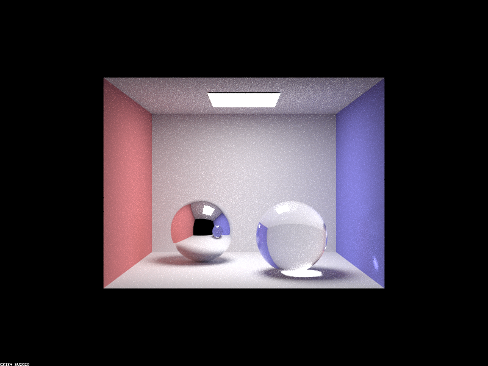

Assignment 3-2 Write-up
Author: Xiaoyuan Zhu (m195@berkeley.edu)
Overview
I picked Part 1 and Part 2 in this assignment. I practiced on how to calculate advanced BSDFs for mirror, glass, and microfacet models.
Online version of this write-up is hosted at: https://cal-cs184-student.github.io/project-webpages-sp23-xyuan195/proj3-2/index.html
Tasks Breakdown
Part 1: Mirror and Glass Materials
[Part 1] Sequence of images of CBspheres.dae with different max_ray_depth

max_ray_depth as 0
max_ray_depth as 1

max_ray_depth as 2

max_ray_depth as 3

max_ray_depth as 4
max_ray_depth as 5

max_ray_depth as 100
Part 2: Microfacet Material
[Part 2] Sequence of images of CBdragon_microfacet_au.dae with different alpha values
alpha as 0.005
alpha as 0.05

alpha as 0.25
alpha as 0.5
[Part 2] Images of CBbunny_microfacet_cu.dae between hemisphere sampling and importance sampling
Hemisphere Sampling